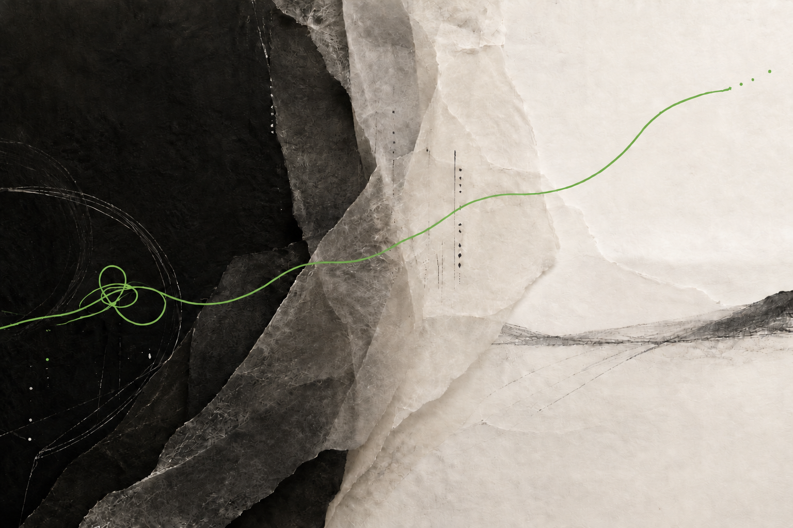

A decision. A relationship. A next chapter.
For Muslim women and leaders who want a thoughtful, faith-aligned conversation around the situation they are living.
- An engagement may be
- A focused private session or a continuing coaching relationship.
Creator. Builder.
Faith-aligned Executive
& Life Coach.
Human Development Architect.
Programs, tools, communities, organisations and technology that help people move forward with dignity, humility and impact.

The form changes.
The intention does not.
A person can know what she should do and still struggle to do it. A leader can understand people and still fail them in the moment. A community can value growth and still lack a language for it.
I am drawn to that space—the distance between knowing and becoming.
The World Within A new way of seeing ourselves—because how we understand what is happening within us shapes how we speak, decide, lead, relate and create change.
When I encounter a human need, I begin asking what would genuinely help. The answer may become a question, a facilitated conversation, a card deck, a curriculum, a community, an organisation or an intelligent companion.
I build the response the moment deserves.
Where Annie enters the work
Annie begins by listening for what the moment requires. The response is built around the people who will live it.
Come with a decision, a leadership need or an idea that refuses to stay small. Annie brings the questions, architecture and human understanding that help it take its next form.
For Muslim women and leaders who want a thoughtful, faith-aligned conversation around the situation they are living.
For leaders, teams and institutions developing how people lead, relate, mentor, learn and contribute together.
For organisations and partners creating a program, curriculum, framework, community or FaithTech response around a real human need.
Evidence in real rooms
Through an academy and certification ecosystem Annie founded for Muslim women internationally.
A 297-card faith-conscious reflection system that turns image, questions and du’a into a way of seeing.
A five-session leadership and human development journey delivered as Mentoring for Excellence.
Leadership, coaching and capability experiences curated for each organisation’s people and context.
A decision you keep circling. A relationship that needs a different response. A responsibility that is changing you. A next chapter you cannot enter in the same way.
Annie offers private, faith-aligned coaching for Muslim women and leaders who want to move forward with dignity, humility and impact.
Explore how you lead, communicate, respond, exercise authority and navigate consequential moments—while remaining aligned with the person and leader you want to become.
Bring one real situation. Together, we understand what is happening, examine the choices before you and decide what you are ready to do next.
It enters with relevance and care—sometimes through a question, a Seerah moment, remembrance of Allah or du’a. Your circumstances and readiness guide how that happens.
Coaching serves a different purpose from therapy, counselling, religious rulings and scholarly guidance. Annie helps you understand what is happening within you and respond with greater consciousness.
When a person needs to understand what is happening within her…
Whispers of the Heart™ · Essence of Life™ · Breathe Again · A NEW VIEW™ · Self-directed courses
When another person depends on the quality of our presence…
CCCC™ · CEOL Practitioner · See · Ask · Entrust · Prophetic Wisdom for Human Change™
When an organisation wants change that lives beyond the training room…
Vital Voices Asia · Mentor for Malaysia™ · Sustaining Her™ · Curated leadership solutions
When meaningful support needs to reach people wherever they are…
MWC · The Conscious Muslim · NURANI · DeenDive · Ra’ei
Each creation answers a different need. Together, they reveal the work of a lifetime.
Explore the complete body of workDeveloping Muslim women who can understand themselves, hold space for others and become a strengthening presence in the lives they touch.
A trusted companion through life’s moments—designed to listen, ask, remember and accompany a person with emotional intelligence, developmental structure and faith-conscious care.
The legacy being built now →Leadership, coaching and capability experiences curated around the people, context and outcomes of each organisation.
The wider home for helping Muslims live faith consciously and shape influence through human development and technology.
A four-part journey through 33 emotions. Name what is present, explore what it may be showing you, return to Allah through dhikr and close with du’a.
297 cards that use image, questions and the Names of Allah to help a person enter her inner world through Discover, Dare and Du’a.
A structured mentoring journey for people who lead at work, at home and in community. Hosted with AKEPT at UNIMAP as Mentoring for Excellence.
A facilitated experience exploring how women work, respond, speak and continue contributing without losing themselves.
Prophetic wisdom studied as a living guide for people responsible for helping other people grow.
A framework earns its place when it helps someone notice, remember and respond differently in real life.
Intention · See · Learn · Action · Munajat
View → Meaning → Thinking → Choices → Life
Meet · Understand · Return · Practise · Become
A faith-inspired way of coaching as a leader
Discover · Define · Curate · Align · Deliver · Review
The developmental spine of Mentor for Malaysia™
An architecture for human-centred learning
Curious by nature.
Serious about what people can become.
Annie is a Malaysian creator, builder, executive coach, life coach, educator, facilitator and curriculum designer. Creation is the thread that joins them all.
Her work is shaped by 21 years in corporate leadership and more than a decade as an entrepreneur. She has trained thousands of participants, developed hundreds of coaches and practitioners, and built learning experiences for individuals, organisations and communities internationally.
She listens for what is missing, asks what the moment is calling for, then turns the answer into something other people can use.
“I am interested in growth that leaves a person with greater dignity, deeper humility and a contribution that reaches beyond herself.”
The question I am taking into doctoral research
My research explores what shapes Muslim adults’ willingness to adopt coaching: trust, fit, expected effectiveness, willingness to invest and the other sources of support they already turn to.
Bring Annie in
Start with what is happening. Choose the closest starting point and write the situation in your own words.
Private coaching · Organisational work · Speaking · Facilitation · Program design · Coach education · FaithTech · Strategic partnership sheis@annieyahaya.com